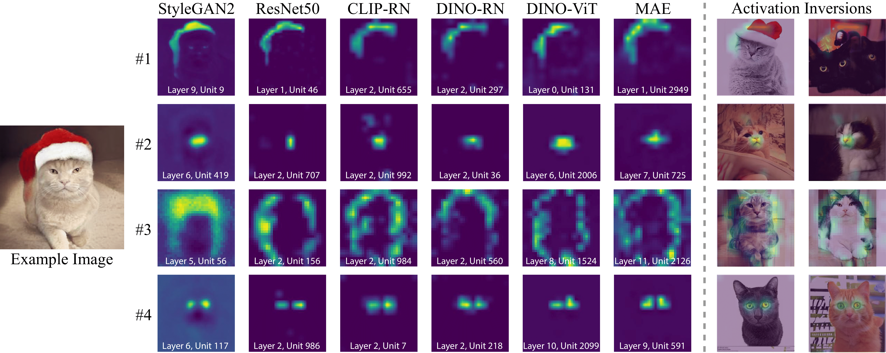

* Equal contribution (Alphabetical)

Our findings demonstrate the existence of matching neurons across different models that express a shared concept (such as object contours, object parts, and colors). These concepts emerge without any supervision or manual annotations. We visualize the concepts with heatmaps and a novel inversion technique (two right columns).
Do different neural networks, trained for various vision tasks, share some common representations? In this paper, we demonstrate the existence of common features we call “Rosetta Neurons” across a range of models with different architectures, different tasks (generative and discriminative), and different types of supervision (class-supervised, text-supervised, self-supervised). We present an algorithm for mining a dictionary of Rosetta Neurons across several popular vision models: Class Supervised-ResNet50, DINO-ResNet50, DINO-ViT, MAE, CLIP-ResNet50, BigGAN, StyleGAN-2, StyleGAN-XL. Our findings suggest that certain visual concepts and structures are inherently embedded in the natural world and can be learned by different models regardless of the specific task or architecture, and without the use of semantic labels. We can visualize shared concepts directly due to generative models included in our analysis. The Rosetta Neurons facilitate model-tomodel translation enabling various inversion-based manipulations, including cross-class alignments, shifting, zooming, and more, without the need for specialized training.1